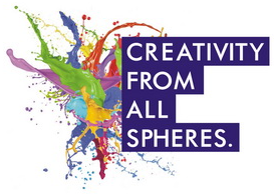

Welcome to My Galleria, the very first online art gallery in Pakistan. Set up in January of 2022, My Galleria has become one of the most well-known art galleries in the Country. In a short span of 6 years, My Galleria has held over 55 exhibitions of various well-known as well as up-coming Pakistani artists. We have also exhibited works of international artists in Pakistan, thus offering local clientele access to works of artists from abroad. We have also been active members of International Water Color Association (local chapter) to help promote Pakistani art locally as well as worldwide and also to encourage international artists to come to Pakistan and exhibit their work here.
The gallery carries one of the largest collection of Pakistani art pieces from various genres, including abstract, calligraphy, landscape, figurative, miniature, seascape etc. Because of our collection, we have been able to help Pakistani artists reach every corner of the world. From west coast of United States all the way to Australia, our clientele is worldwide.
With the highest following online for any Pakistani art gallery, our mission remains to provide a platform, to Pakistani artists, that has the real ability to showcase their work worldwide and help them gain appreciation and much greater market access.